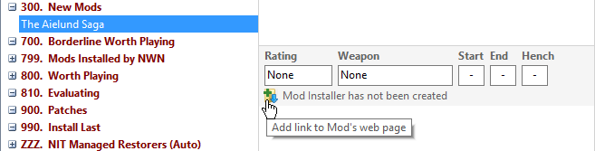
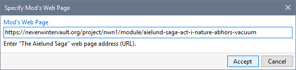
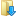
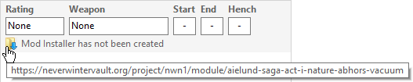

Typically, the Mods you use are ones you have downloaded from a Web Site such as The Neverwinter Vault and Nexus Mods. Keeping a record of a Mod's download page is recommended to make it easy to visit the page for updated information and comments.
When you use Download Project to download a Mod from The Neverwinter Vault, the Project Page's web link is automatically stored for you.



Download Page icon and displays the URL when you hover over it.
Download and install Neverwinter Vault Projects
Download and install Mods from other sites
Record a Mod's Web Page Link
Review Mod information in added files
Make Mod notes and record information
Add Mods from downloaded files